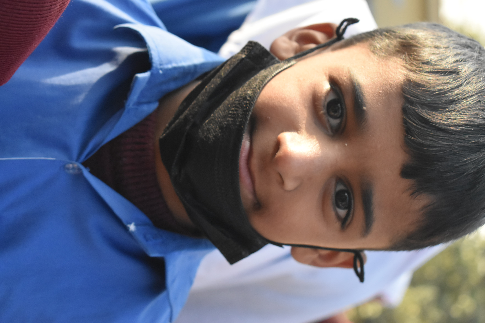

Tayyab

Meet Tayyab: A 10-Year-Old Dreamer from Rawalpindi Tayyab is a 10-year-old boy from Rawalpindi, Pakistan, who has faced more hardship in his young life than most people ever will. Born into a family struggling to survive, Tayyab’s life has been shaped by poverty, loss, and the harsh realities of living in one of the city’s most underprivileged neighborhoods. Tayyab’s father works as a street vendor, selling fruits and vegetables in the busy markets of Rawalpindi. Though he works tirelessly every day, the income is not enough to provide for the family’s basic needs. Tayyab’s mother, a kind and hardworking woman, stays at home to take care of the household, but her efforts are also limited by the financial constraints they face. When Tayyab was just 6 years old, his world was turned upside down. His mother fell seriously ill and was unable to work for months. With medical bills piling up and no savings to fall back on, the family was plunged into deeper poverty. Tayyab’s father, despite his best efforts, could not afford the medical treatment his wife needed. The emotional and financial strain took a toll on their relationship, and they were forced to move into a smaller, rundown home to save money. Throughout these challenges, Tayyab has always been a resilient child. He remains a beacon of hope for his family, despite the overwhelming odds. He is intelligent, curious, and always eager to learn, but he has never had the opportunity to attend school. Every day, he watches other children walk to school, carrying their books, while he is left behind, unable to pursue his dream of education. Instead, Tayyab spends his days helping his father sell fruits in the market. He often dreams of becoming a teacher one day, hoping to make a difference in the lives of children who, like him, come from poor backgrounds. But those dreams seem impossible without the education he so desperately desires. Tayyab has never had the luxury of a classroom or even the most basic school supplies. The closest thing he has to education are the books he borrows from his friends and the lessons he tries to learn on his own. But his limited access to education has left him feeling hopeless. His heart aches as he wonders if his dream of becoming a teacher will ever come true. How You Can Help Tayyab Tayyab’s story is not just one of hardship—it is a story of resilience, hope, and a dream that deserves to be realized. But for Tayyab to achieve his dream, he needs your help. With your support, Tayyab can return to school, receive an education, and have the chance to build a better future for himself and his family. Your donation will provide Tayyab with the opportunity to attend school, receive the necessary books and supplies, and have a chance to learn in a proper classroom. With an education, Tayyab will not only be able to fulfill his dream of becoming a teacher, but he will also be able to break the cycle of poverty that has held his family back for so long. For just a small contribution, you can help Tayyab rise above the hardships of his past and give him the opportunity to transform his future. Every donation, no matter how small, will make a world of difference in Tayyab’s life. Together, we can help Tayyab achieve his dreams and create a brighter future for him, his family, and his community.